VISUALIZACIÓN
DE DATOS E INFORMACIÓN
Es una disciplina que busca representar de forma visual datos e información abstracta y compleja con el fin de que resulte más fácil de comprender y asimilar. Para esto se hace uso de visuales de diseño, conceptos de ciencias cognitivas y percepción, logrando un equilibrio entre forma y función.
¿QUÉ ES CINEMETRICS?
Es una herramienta digital diseñada para analizar la estructura visual y rítmica de las películas a través de métricas cuantitativas, en particular el análisis de los tiempos de corte o edición.
OBJETIVO
Aplicar métodos cuantitativos para entender la estructura narrativa y visual del cine, centrándose en el análisis de los patrones de montaje de una película, es decir, la duración de cada plano o corte y cómo estos afectan la percepción rítmica y narrativa de una película.
Al medir la longitud de los planos (duración de las tomas), el proyecto permite a los investigadores examinar la evolución del estilo cinematográfico a lo largo del tiempo, así como comparar diferentes directores, géneros o épocas.
FREDERIC
BRODBECK
Diseñador y desarrollador nacido en Alemania, especializado en visualización de datos y medios digitales. Estudió diseño de comunicación en la Academia de Bellas Artes de Stuttgart, donde comenzó a interesarse por la intersección entre el arte, el cine, la tecnología y el análisis de datos.
Brodbeck dirige el estudio de diseño y desarrollo ´RULES RULES RULES’, donde ha trabajado en proyectos de diseño interactivo, visualización de datos y desarrollo de software, siempre explorando formas creativas de representar la información.